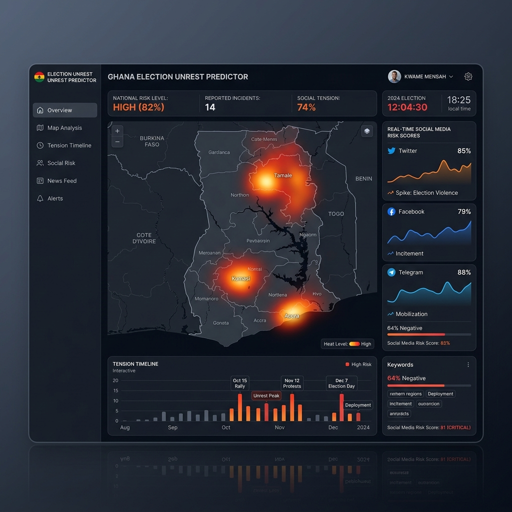
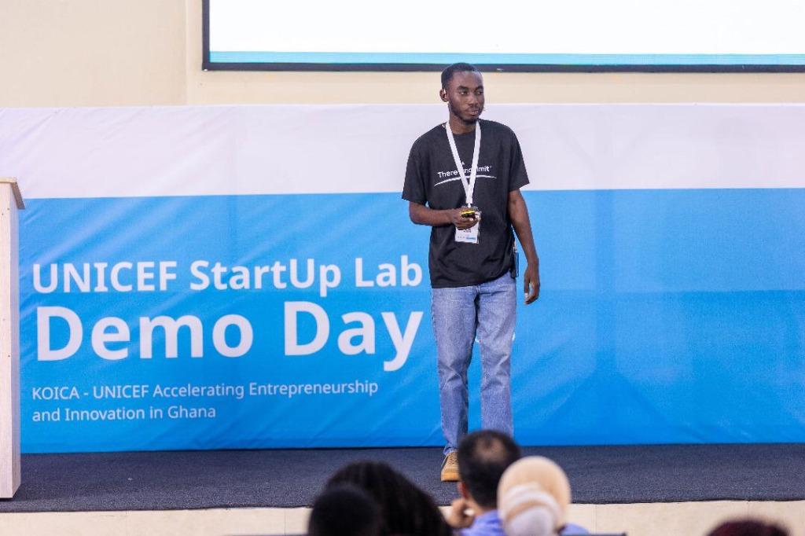
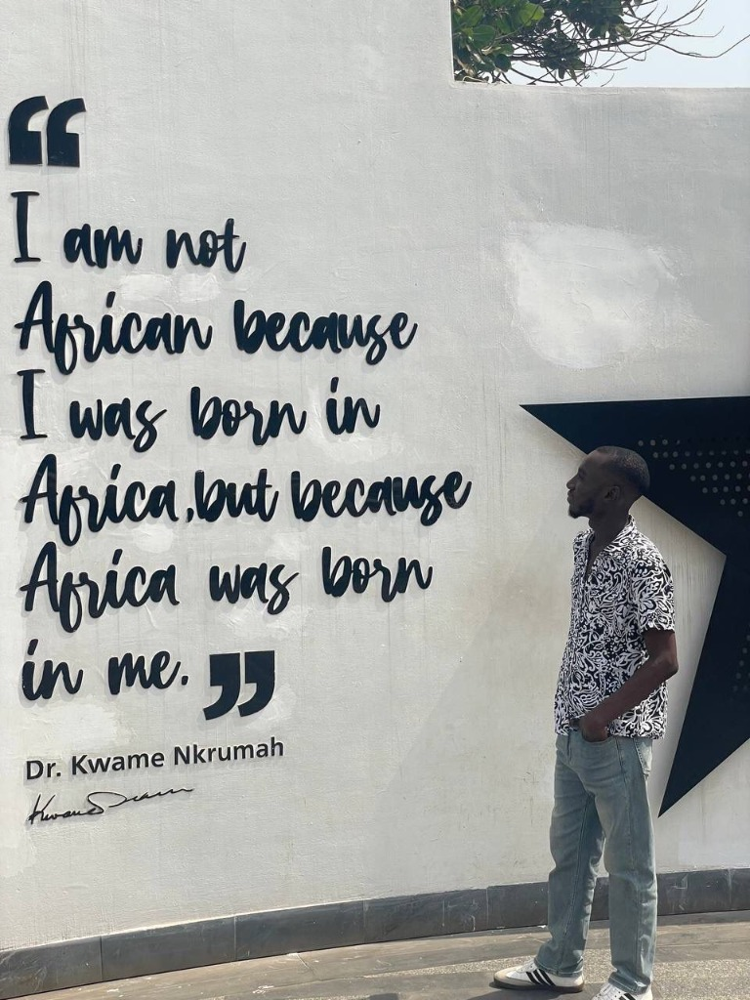
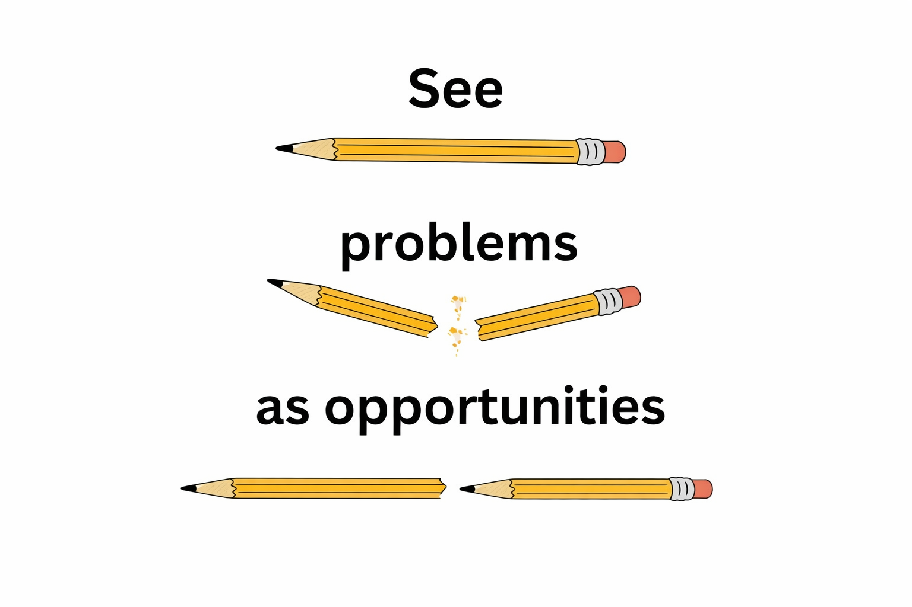

3+
Years of building high-performance AI/ML products.
Years of building high-performance AI/ML products.
An AI customer service agent that natively understands and processes local dialects like Twi, Akan, and Pidgin. It operates entirely offline, resolving customer requests 24/7 over their usual customer service call line.
View ArchitectureAn AI-powered academic integrity platform combatting generative AI misuse. It tracks the complete digital footprint of a student's workflow, monitoring copy-paste events and editing behavior to provide a verifiable "proof of work" report.
Explore the Platform


A specialized, AI-driven communication coaching platform engineered to help users refine their public speaking, articulation, and professional presentation skills.
Try the AppThe Election Unrest Early Warning System (EUEWS) is a real-time NLP pipeline that continuously monitors tweets, comments, and fast-moving social media content to identify incitement to violence and electoral delegitimation. Powered by a fine-tuned AfriBERTa model, it captures critical nuances across Ghanaian local dialects—including Hausa, Pidgin, Ga, Ewe, and Akan—to alert stakeholders of high-risk unrest before it escalates.
View Dashboard

I founded Griot Labs with a single, uncompromising vision: to transition Africa from being mere consumers of global technology to architects of our own artificial intelligence. We aren't just building software; we are building the digital foundation for the continent's future.
Through my digital alias @digital_griot, I demystify AI on Instagram and TikTok. I am a vocal advocate for tech policies that drive economic growth, publishing in-depth articles on Medium about the macroeconomic impact of technology.

Do you know why a city filled exclusively with highly advanced,
rule-abiding self-driving cars might actually result in the worst traffic jam in human
history?
We laugh at the quirks of artificial intelligence, but the deeper economic
paradoxes are hiding in plain sight. Consider this: data is currently being mined across the
African continent like a precious new element. Yet, somehow, we don't own the rights to the
refining plants. I write to untangle these strange economic knots. Grab a coffee and join me
as I explore the unseen rules of tech policy, and how we can finally build sovereign AI that
moves us forward.


Strategy is the foundation of every technical deployment. At Griot Labs, I audit business operations to identify where AI can eliminate human error and resource waste. I architect custom roadmaps that integrate AI into existing workflows to drive revenue and lower overhead. This is the definitive first step for any organization looking to scale with intelligence.
We build high-performance engines for data-driven decision making. My work spans from financial risk modeling to real-time security systems. If a business process generates data, we can build a model to optimize it.
We bridge the gap between AI research and business reality by deploying autonomous agents that handle repetitive tasks. We don't just build tools. We integrate digital team members into your stack to increase output without increasing headcount.